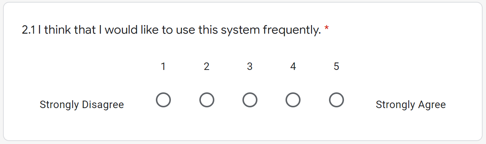

UNIVERSITY OF MANCHESTER
COVID-19 (forecasting) Dashboard
exploring forecasting and visualisation strategies
to facilitate understanding of COVID-19 in the UK&World
by
Shangjie Lyu
BSc (Hons) Computer Science
University of Manchester
Department of Computer Science
Supervisor: Prof. Sophia Ananiadou
30 April 2021
Over the past year we have seen a number of different methods used to predict the trends of COVID-19. However, not all models provided promising results and only few employed multivariate datasets. At the same time, most research findings were not well presented to the public but only in the literature. In this project I focused on the UK data, found that the usage of government stringency, vaccination and testing data improved the accuracy of COVID-19 cases forecasting, while vaccination and historical cases data improved the accuracy of COVID-19 deaths forecasting. I implemented LSTM models with accuracies of 94.3% and 96.2% for cases and deaths forecasting, and ARIMA models with accuracies of 89.8% and 90.4%. Three-week forecasts for COVID-19 cases and deaths data along with various other visualisations were then integrated into a dashboard, which performed very well both in information presentation and usability.
Coronavirus disease (COVID-19) is caused by the Severe Acute Respiratory Syndrome Coronavirus 2 (SARS-CoV-2) and has had a worldwide effect. On 11 March 2020, the World Health Organization (WHO) declared it a pandemic, pointing to the more than 1.6 million COVID-19 cases in over 110 countries and territories around the world at the time.
Today, the number of cases has exceeded 151 million, while more than three million people have died. The UK was one of the countries hardest hit, but with the good progress the Mass Vaccination Programme has made since 8 December 2020[1], we can now hold a more optimistic attitude.
At the same time, machine learning has been applied extensively in this pandemic. We have seen a variety of predictive models using different methods and approaches to inform policy development and help tackle the pandemic. However, not all models provide convincing predictions, and the research findings are not well presented to the public.
In this project, I want to explore the various forecasting methods that can be used for COVID-19 forecasting and determine the best approaches. At the same time, I would like to develop a dashboard to informatively present the findings and make them accessible to everyone. Research gaps and technical-detailed motivations can be found in Section 2.3.
All the data presented in this report are as of 20 April 2021.
In line with the motivation, this project has the following aims and objectives:
This report contains six chapters:
This chapter presents the background of the project, including a literature review of COVID-19 forecasting methods and a comparative analysis of existing COVID-19 dashboards, then reiterates the research gaps and motivations, and finally introduces the mathematical foundations of some methods that will be used in the subsequent chapters.
Over the past year we have seen a number of different methods used to predict the trends of COVID-19. In the early stage of the pandemic the models were mainly those produced by epidemiologists using epidemiological methods, including the SEIR and SEIRS models[2]. However, here we need to recognise the uniqueness of the UK data in that the UK is one of the very few countries in the world that do not publish the COVID-19 recoveries data[3], which is essential to build the SEIR model, and therefore this was not a viable option for my project.
In the literature review I will focus on the following three types of models: mathematical or statistical based models, machine learning based univariate models, and machine learning based multivariate models.
Maleki et al. developed an autoregressive time series model based on two-piece scale mixture normal distributions, called the TP-SMN-AR model[4]. It was fully mathematical and statistical based and involved many classical autoregressive methods. The model achieved excellent results using worldwide COVID-19 recoveries cumulative data from 22 January 2020 to 30 April 2020 and fitting the last ten days, with MAPE errors as low as 0.22% and 1.6% for the confirmed cases and recoveries forecasting respectively. Apart from the model quality, another explanation for its high accuracy may be that the data itself had a stable and consistent upward trend over time, thus reducing disturbances to predictions.
This was followed by more studies on COVID-19 prediction based on machine learning and deep learning methods. Chimmula et al. were among the first researchers to use LSTM models for COVID-19 prediction[5] . They built a univariate LSTM model using data up to 31 March 2020 and predicted the COVID-19 transmissions in Canada. In the short term, their model predicted that the COVID-19 cases would reach a peak in mid-April 2020, which can be considered correct, but they also made a long-term prediction that the entire pandemic could end in June 2020, which was not quite as accurate.
At the same time, LSTM models can certainly be difficult to train, as Shastri et al. built a univariate LSTM model using confirmed COVID-19 cases and deaths data up to 1 September 2020 in India and provided 30-day predictions[6]. The study suggested that the model achieved 97.59% and 98.88% accuracy in cases and deaths predictions respectively, which was apparently unconvincing: cumulative cases and deaths data were used in the figures presented for model predictions, the predicted values were not only inconsistent with the input data but were even declining; cumulative data should never decline. The resulting interpretation for the one-month forecast was also proven to be inaccurate. The most likely problem with this study is that the model was over-fitted and predictions on the training data were used to measure the model performance.
Shahid et al. provided a more robust COVID-19 predictive analysis using univariate deep learning models, including LSTM, GRU and Bi-LSTM[7]. They also experimented with statistical models such as SVR and ARIMA. They used data for ten countries up to 27 June 2020, each with 110 days as input and 48 days as forecast output. The findings were that the Bi-LSTM models generally provided the best results, but LSTM and GRU models can perform better for some countries; the deep learning models outperformed the statistical models.
However, Barman’s study had different conclusions[8]. It also compared univariate deep learning models ( variants of the LSTM model) and statistical model (ARIMA model), and used data up to 25 May 2020 in four countries, with the following results: in many cases, ARIMA provided better results than the complex LSTM models; the vanilla LSTM model outperformed its complicated extensions (Stacked LSTM, Bi-LSTM, ConvLSTM, etc.). The LSTM models required more training data and had more limitations, so the study suggested that ARIMA should be recommended as the baseline model for COVID-19 prediction. This result is not popular in the COVID-19 forecasting literature, and while I believe that ARIMA models can do well in many cases, I do not consider the ARIMA models to be as robust as the LSTM models. One potential explanation for this result is that the models in the experiment only performed short term (1/3/5 days) predictions and did not cover different phases of the data.
Yudistira saw the benefits of using multivariate datasets rather than univariate as the COVID-19 data is affected by many factors, and constructed a multivariate LSTM model in the experiment and compared it to a multivariate RNN model[9]. In addition to the COVID-19 cases, deaths and recoveries data, the models also used the latitude and longitude of a region as input. It used data up to 1 May 2020 for 100 countries as training data and 4 countries as validation data, resulting in the LSTM model outperforming the RNN model with relatively high accuracy. The study presented the idea that a country’s geographical location has an impact on its COVID-19 data, and while it is relatively innovative and has some data to support it, I believe the experiment would be even more convincing if it used not only geographic data but also took into account demographic, economic, and social factors.
Chandra et al. conducted a more comprehensive experiment by comparing univariate and multivariate versions of the LSTM, BD-LSTM, and ED-LSTM models[10] . It used data for 10 Indian states up to September 2020 as input and population density as a multivariate feature, evaluated with 4-day projections and finally the best performing model was selected for a two-month prediction. The results were: the LSTM and BD-LSTM models outperformed the ED-LSTM model overall; the univariate models outperformed the multivariate models; and the two-month predictions were accurate overall. As stated by the authors, the biggest challenge was the lack of relevant data; the authors intended to capture data on population density, logistics and social aspects such as culture and lifestyle, but ultimately only population density was achieved, which turned out to be a confounding factor and did not contribute to the accuracy of the model. For such a regional level study, I believe using data of lockdown measures as one of the inputs would have been very helpful.
Said et al. further improved the process of building a multivariate LSTM model for COVID-19 forecasting[11]. It first applied KMeans to cluster individual countries based on demographic, social-economic and health sector indicator data, and used COVID-19 data for countries clustered with Qatar up to 31 June 2020 as training data, then built a multivariate Bi-LSTM model with the feature of the lockdown measures added to perform 10-day predictions for Qatar. The training data of the model was made more relevant by clustering, and the model achieved significant improvement in the prediction performance by adding the lockdown measures data.
Table 2.1 presents a summary of the literature review of COVID-19 forecasting methods and proposed work.
| Reference | Methods | Forecast | Features (multivariate) | Latest Data | Area | Results | |||||||||||||
| Proposed Work | ARIMA,LSTM | 21 days |
|
20 Apr 2021 | UK |
|
|||||||||||||
| Shastri et al.[6] | LSTM | 30 days | / | 1 Sep 2020 | India |
|
|||||||||||||
| Yudistira[9] | LSTM,RNN | 33 days |
|
1 May 2020 |
|
|
|||||||||||||
| Shahid et al.[7] |
|
48 days | / | 27 Jun 2020 |
|
|
|||||||||||||
| Barman[8] |
|
1/3/5 days | / | 25 May 2020 |
|
|
|||||||||||||
| Chandra et al.[10] |
|
|
Population Density | 30 Sep 2020 |
|
|
|||||||||||||
| Said et al.[11] |
|
10 days |
|
31 Jul 2020 |
|
|
|||||||||||||
| Maleki et al.[4] | TP-SMN-AR | 10 days | / | 30 Apr 2020 | World |
|
|||||||||||||
| Chimmula et al.[5] | LSTM |
|
/ | 31 Mar 2020 | Canada |
|
|||||||||||||
Following the COVID-19 forecasting, the final project deliverable will be a integrated dashboard and it is important to first understand the existing work.
As the project is focused on the UK, we can not ignore the official UK government COVID-19 dashboard, which was developed by Public Health England[12]. As the audience is the general public, it provides basic and essential information for all regions of the UK and is of relatively good usability. The only problem is that it has too many metrics for each data, for example, for COVID-19 cases data, it has cases by reporting date data, cases by testing data, cases by laboratory testing data, etc. This can cause confusion and reduce usability; to address this issue, they also provide a simple summary of the UK. Figure 2.1 contains a screenshot of the official UK government dashboard.
Another important dashboard was developed by Johns Hopkins University (JHU) and it has been referenced by various organisations[13]. JHU has collected data for each country in the world since the beginning of the pandemic, and the dashboard provides the basic information presented in a map. Figure 2.2 contains a screenshot of the JHU dashboard.
Our World in Data has also developed a dashboard for the global COVID-19 data with comprehensive charts and analysis[14]. However, this dashboard is somewhat overly complex and the hierarchy of charts is not clearly organised, making it relatively less usable.
In contrast, Bhatia provided a dashboard focusing on COVID-19 trends in different countries with good usability[15]. Figure 2.3 contains a screenshot of Bhatia’s dashboard.
Incubator for Media Education and Development (iMEdB) developed an impressive dashboard for Greece[16]. It provides basic data about Greece and the world, and also shows the major events in Greece as annotations. The structure is well designed and the visualisation is informative, thus the dashboard has promising usability. Figure 2.4 contains a screenshot of the iMEdB dashboard.
The University of Texas (UT) included a forecast in their work[17]. It provides a three-week projection for US mortality data, using SEIR and curve fitting methods. It is simple and useful. Figure 2.5 contains a screenshot of the UT dashboard.
The COVID-19 ForecastHub provided a more comprehensive dashboard in terms of forecasting and is the data source for the official US CDC COVID-19 forecasting page[18]. It integrates more than 20 predictive models, including statistical and machine learning models for US COVID-19 cases and deaths predictions. However, the different models provide very different results, making this dashboard only suitable for technical audiences. Figure 2.6 contains a screenshot of the COVID-19 ForecastHub dashboard.
Table 2.2 presents a summary of the comparative analysis of existing COVID-19 dashboards and proposed work.
| Reference | Focus | Events | Trend | Map | Forecasting | Audience | Complexity | Usability | ||||
| Proposed Work | UK | UK | World | (UK) Cases/Deaths |
|
|
3 | 4.5 | ||||
| UK Government[12] | UK | / | / | (UK) Cases | / | Non-technical | 3 | 4 | ||||
| JHU CSSE[13] | World | / | / |
|
/ | Non-technical | 2 | 3 | ||||
|
Our World in Data[14] |
World | / | World | Various Maps | / |
|
5 | 1.5 | ||||
| Bhatia[15] | / | / | World | / | / |
|
2 | 4 | ||||
| iMEdB[16] | Greece | Greece | / |
|
/ |
|
3 | 5 | ||||
| UT[17] | US | / | / | / |
|
|
1 | 5 | ||||
|
COVID-19 ForecastHub[18] |
US | / | / | / |
|
Technical | 3.5 | 3.5 | ||||
From the literature review of COVID-19 forecasting methods, we have seen the strengths and limitations of various models, with research gaps including:
From the comparative analysis of the existing COVID-19 dashboards, we can also see some limitations of the current work:
Therefore, I will focus on the following in my project to overcome the above limitations:
In this section I will introduce the mathematical foundations of some time series forecasting methods that will be used in the later chapters.
Autoregressive Integrated Moving Average (ARIMA) model is time series forecasting model, which is a generalisation of Autoregressive Moving Average (ARMA) model. It is applied when the data show non-stationarity in the mean sense, where an initial differencing step (corresponding to the ”integration” part of the model) can be applied one or more times to eliminate the non-stationarity of the mean. The process of first order differencing is shown in Equation 2.1.
The AR part of the model indicates that the data to be predicted is regressed on its own lagged values, and the MA part of the model shows that the regression error is a linear combination of error terms whose values occurred simultaneously at different times in the past[19]. An model is represented mathematically in Equation 2.2.
Where, and represent the time series data and its time index; represents the lag operator; and represent the parameters of the autoregressive and moving average part of the model respectively; represents the error terms.
Artificial Neural Networks (ANNs) can handle complex relationships, but they cannot capture historical dependencies in the data, and the performance of the models depends substantially on the features of the dataset[20]. A type of ANN called Recurrent Neural Network (RNN) was proposed to solve problems involving sequential data. In RNN, the current state is predicted based not only on the current input values, but also on previous hidden state values. However, RNNs suffer from the problem of gradient vanishing and gradient exploding, resulting in RNNs not being able to learn long-term dependencies from the data and can only be used for short-term prediction[21].
Long Short Term Memory (LSTM) networks overcome these drawbacks by employing memory cells, input gate, forget gate and output gate, and can perform much better in learning long-term dependencies. Figure 2.7 shows the architecture of LSTM.
The forget gate is the first sigmoid function, which determines whether the information from the previous cell state will be preserved. The input gate donates the next sigmoid function and the first tanh function, which indicates whether the information will be saved to the cell state. The last sigmoid function is the output gate, which determines whether the information will be passed on to the next hidden state. The process is represented mathematically in Equation (2.3)-(2.8):
Where, , , represent forget gate, input gate, output gate at time t; , represent sigmoid and tanh function; , , and , , refer to the wights and biases respectively; , , represent candidate cell state, cell state and output hidden state at time t; donates element wise multiplication of vectors.
This chapter presents the step-by-step methodology used throughout the life cycle of this project, from data collection, data pre-processing and construction of deep learning and statistical models, to visualisation, dashboard construction and evaluation. Figure 3.1 shows an overview of the project.
Over the past year, a variety of data sources related to COVID-19 have been released by both the public and private sectors. In this project, I used ten different types of data; for this report, all data are as of 20 April 2021.
Table 3.1 shows a description and usage of the different data above.
| Data Name | Data Scource | Data Type |
Data Usage
|
| Time series data (UK) | Public Health England | Original Data |
UK Page
|
| Government Stringency | University of Oxford | Additional Feature | |
| Vaccination | Public Health England | Additional Feature | |
| Hospital Admissions | Public Health England | Additional Feature | |
| Testing | Public Health England | Additional Feature | |
| Ventilators | Public Health England | Additional Feature | |
| R0 | Francisco Arroyo et al. | Additional Feature | |
| Time series data (world) | Johns Hopkins University | Original Data | World Page |
| UTLA | Public Health England | Original Data |
Map Page
|
| Boundaries | Office for National Statistics | Original Data | |
Real-world data can be inconsistent and complex; therefore, a combination of different data pre-processing methods need to be utilised before we can analyse the data[25]. In this section, I will describe the methods I used when pre-processing data for the LSTM model, both the original time series data and additional features data.
LSTM models are sensitive to input, and I followed a two-step approach to pre-process the data.
| (3.1) |
| (3.2) |
The additional features data have multiple time ranges, and it is fundamental to keep each feature consistent with the original time series data. Each feature will be processed twice to provide the correct version of the sequence for cases and deaths forecasting. Referring to the time indices of the original cases and deaths data, padding and stripping are employed to ensure that the additional features have the same time indices as the original data. The process is illustrated in Figure 3.2.
Afterwards, all the additional features data are also scaled to a range of 0 to 1.
After the above two steps, the data is transformed into sequences. the LSTM model requires the input data to have the following 3D structure (number of sequences, number of time steps, number of features) and Figure 3.3 demonstrates how the data is transformed into sequences. The sequences will then be used to train the model.
Time series forecasting of UK COVID-19 cases and deaths data is a core function of my project. In this section, I will describe the methods employed to implement the LSTM model and ARIMA model for forecasting, as well as a further ensemble model of the two aforementioned models, for reference.
After pre-processing the original data and additional features, the selected inputs are passed into the LSTM model, which then produces multi-step predictions; for this project I chose to forecast for the next three weeks based on data from the previous week. However, the direct output of the model is differenced and scaled, and reverse scaling and reverse differencing is required to obtain the final model predictions. Figure 3.4 illustrates the process of forecasting with the LSTM model.
Adaptive Moment Estimation (Adam) is used as the optimiser. Adam optimisation algorithm is an extension of Stochastic Gradient Descent(SGD), proposed by Diederik Kingma and Jimmy Ba in 2015. Adam computes individual adaptive learning rates for different parameters from estimates of the first and second moments of the gradient, which in practice can provide better optimisation results than other stochastic optimisation methods[27].
Mean Square Error (MSE) is used as the loss function. MSE is the most commonly used regression loss function and is the sum of the squared distances between the actual values and the predicted values[28], as shown in Equation 3.3.
| (3.3) |
One of the main challenges when working with deep learning models is how long to train them. Undertraining means that the model will underfit the training and testing data; however, overtraining means that the model will overfit the training dataset and perform poorly on the testing set[29]. Underfitting can be addressed by improving hyperparameters and increasing training epochs, and overfitting needs to be addressed by regularisation. Early stopping is one of the oldest and most widely used forms of neural network regularisation, and it can provide an effective and simple way to avoid overfitting[30, p. 247].
In my approach, the loss function values on the training data are monitored and if the model performance does not improve within 10 epochs, the model will stop training and the best performing model will be returned.
Dropout is another regularisation method used to avoid overfitting when training a neural network. During the training process, some outputs of the layers are randomly ignored or dropped out. This has the effect of making the model less complex and the remaining units are forced to probabilistically take on more or less responsibility for the inputs. This would make the model more robust by not allowing the connected network layers to co-adapt to correct the errors from the prior layers[31].
In my approach, each LSTM layer is followed by a dropout layer with a dropout rate of 0.2, meaning that the LSTM layer is only trained on 80% of the randomly selected units.
Another feature of my project is that it not only provides a three-week forecast, but also a 95% confidence interval. However, there is no direct way to obtain 95% confidence intervals for the predictions from the LSTM model.
In my approach, I used the dropout layers to derive the prediction intervals. The process is as follows:
Equation (3.4)-(3.6) show how the model predictions and confidence intervals are calculated.
ARIMA models have three terms:
Each time the ARIMA model makes a prediction, a grid search is performed for different values of the 3 terms mentioned above and the model with the best performance is selected.The optimal model will then make a forecast, which will return the predicted values for the next three weeks with a 95% confidence interval.
In my approach, p and q values are iterated from 2 to 5, while d values are iterated from 0 to 2.
Two types of methods are used to measure the performance of the model when performing grid searches.
When performing a grid search, a brute-force approach iterates over every combination of parameters and can take a long time. Hyndman and Khandakar proposed a stepwise approach[34]. It starts with four possible models, selects the model with the smallest BIC as the current best model, and then considers a number of other models, updating the current best model whenever a model with a lower BIC is found. It reduces processing time by adding intelligent procedures for testing model orders and does not require testing all models[35].
In my approach, the stepwise method is used to perform the grid search.
The LSTM model and the ARIMA model are based on different mechanisms for forecasting and so the prediction patterns will differ for different types of data. It is helpful to understand the similarities and differences in the performance of these two models over time, so I constructed an average ensemble model. It will return the mean of the predicted values and confidence intervals of the LSTM and ARIMA models, in the process shown in Equation (3.7)-(3.9).
In the actual time series forecasts, there is not enough information to tell the model to set thresholds for the predictions. In particular, the cases and deaths data for COVID-19 are always non-negative integers, but the model does not know this and may instead make negative predictions, so I performed prediction cleansing by converting all negative predictions to zero, as shown in Equation 3.10.
| (3.10) |
Visualisation is another important part of my project, which aims to provide an in-depth exploration of the COVID-19 outbreak in the UK, while providing an informative overview of the situation in different countries around the world. It should be appropriate for both technical and non-technical audiences; in this section I will describe the strategies for visualisation.
To informatively present the time series data from the COVID-19 cases and deaths data in the UK, and the predictions from the different models, I used two methods:
Figure 3.5 shows the structure of the forecasting graph.
COVID-19 is a global pandemic, and it is not enough to look at data from the UK alone. It is important for us to know what is happening in other countries, especially those that are geographically or demographically similar to the UK, or that have other important references.
In the most common charts (number of cases or deaths versus time), although it can give us a numerical overview of each country, it does not directly provide an easy way to understand whether the situation is getting better or worse.
In my approach, I plotted not only the curves for different countries, but also the trajectories of different countries by plotting the logarithmic scale of the number of new cases or deaths against the total number of cases or deaths, and it can provide us with a clear overview of the trajectories of different countries[15].
If a country has a constant growth rate (exponential), it will move upwards linearly in the graph; if the growth rate is getting slower, it will fall in the graph, meaning that the virus is under control; if the growth rate is getting faster, it will rise back to the linear trajectory, meaning that the situation is getting worse.
On the Y axis, I have chosen to plot new cases per week rather than per day, not only to stabilise the graph but also to give a more robust and accurate picture of the actual trends in different countries.
Johns Hopkins University (JHU) has provided data for 275 countries around the world[13], however, if we plot each country in the same way, the charts would become messy and lack order of significance.
In my approach, seven countries are highlighted in different colours and the others are plotted with thinner grey lines. The seven countries are: the United Kingdom (the focus of this project); Italy, Spain, France, Germany (European countries with a similar population size to the UK); the United States and China (which played important roles at different stages of the pandemic).
Due to the nature of Plotly charts[36], users will also have the option to zoom in to see more detailed trajectories or choose to view each individual country.
To make the chart neater and to improve usability, all country names longer than the United Kingdom will be replaced with their ISO 3166-1 alpha-3 standard[37] three-letter country code.
In addition to information at the national level in the UK, it is valuable to provide regional level data on COVID-19 infections and fatalities. Not only does it help citizens to understand the situation in the area, it can also inform local government policies.
In my approach, I have chosen to map the cumulative cases and deaths data per 100,000 residential population for different Upper Tier Local Authorities (UTLA)[24]. This has the advantage that it takes into account not only the total number of cases or deaths, but also the population density, and therefore provides a more accurate regional overview. The maps of infections and fatalities are presented in different colours, and are designed to be interactive and easy-to-use.
Notably, I also created a mapbox[38] style to match the background colour of the maps to the dashboard, thus improving the consistency of the system.
The integration of time series forecasting models and various visualisation strategies is the final part of my project. As it is a publicly accessible system, designed to suit both technical and non-technical audiences, the usability of the system had to be carefully considered. In this section I will describe the user experience principles I followed when designing the dashboard.
User Experience (UX) describes the user’s interaction and experience with a system[39]. When designing the dashboard, I followed 5 UX principles[40].
The first hierarchy relates to the information architecture, i.e. how the content is organised throughout the site; the visual hierarchy is how the designer helps the user navigate more easily through a section or page[40].
In my dashboard, there is a sidebar on the left hand side which contains the most basic and essential information, including the latest figures for the UK, last updated times, cases and deaths curves, it also has three buttons to help the user navigate through each of the following pages: UK page, World page and Map page. Figure 3.6 contains the structure of the dashboard; Section 3.4 described how the user can interact with each individual chart.
The entire system of my dashboard adheres well to the principle of consistency. It has several different aspects:
Error prevention is another important goal when designing a system[40]. In my dashboard, confirmation is achieved in two ways:
My dashboard provides a high level of control to the users. In addition to the functions described in section 3.4, such as model selection, country selection, showing or hiding of the major events, and free navigation through the different pages, each individual graph also provides the following functions: saving the graph to a local device, panning, boxing, lasso selection, zooming in, zooming out, autoscaling, resetting the axes.
In my dashboard, the principle of accessibility is realised in two ways:
In my project, evaluation serves two purposes:
In this section I will describe the different metrics and methods used to perform the evaluation.
Figure 3.7 shows the process of local evaluation.
Given the input data and the model, the resulting predicted data is measured against the actual data that the model has not seen before, using three evaluation metrics:
Notably, PMAE is a model performance metric proposed by myself to address the problem that MAPE values are not constant because of data fluctuations.
Local evaluation is used during the development phase to measure the performance of a set of models and to select the best performing model.
Global evaluation starts by randomly generating ten timestamps for the cases and deaths forecasting respectively: the ten timestamps should cover different stages of each data after the first lockdown (the data during the first lockdown will be used as the minimum length of training data). These ten timestamps will be stored and will be referred to in the future when evaluating further different models.
It then uses the ten different input data produced from the timestamps to perform the local evaluation process described in Section 3.6.1.1 ten times and record the outputs for each of the three metrics, and then calculates the average of the ten outputs and generates three new metrics: Average Mean Absolute Error(AMAE), Average Mean Absolute Percentage Error (AMAPE), and Average Percentage Mean Absolute Error (APMAE). The calculation is shown in Equation (3.14)-(3.16); the process of global evaluation is shown in Figure 3.8.
Due to the stochastic nature of the LSTM model and the usage of dropout layers, there is a range of random variance in the model output each time. To address this issue, the above process will be repeated five times and the median values will be chosen as the final outputs.
Global evaluation is used during both the development and deployment phases and is an improvement on local evaluation in that it provides a more robust and accurate performance metric for the model by covering different phases of the data and testing multiple times. AMAE value is used in Section 3.6.1.3 to calculate the Contributing Factor (CF) value; APMAE value is referred to as the prediction error in Section 5.1.4.
Contributing Factor (CF) is a feature importance metric proposed by myself to evaluate the impact of a feature on a LSTM model. It uses a univariate LSTM model as the reference model and a multivariate LSTM model with the feature to be evaluated as the target model, performs the global evaluation process described in Section 3.6.1.2 and obtains the AMAE values respectively, and then performs the calculation shown in Equation 3.17.
| (3.17) |
A positive CF value means that the feature will improve the prediction accuracy of the model, otherwise it will reduce the accuracy; a higher absolute CF value means that the feature will have a greater impact on the model performance, whether it is positive or negative.
Contributing Factor is used during the development phase to measure the impact of different features on the LSTM model performance and to select the features that will contribute the most to improving the prediction accuracy.
To further facilitate the evaluation of the different predictive models, a baseline model was implemented. This model takes the last observed input data as its predicted value, as shown in Equation 3.18.
| (3.18) |
The baseline model is used during the deployment phase.
In addition to using quantitative methods to evaluate the performance of the predictive models, I also used a questionnaire to evaluate the dashboard during its deployment phase. A group of participants was recruited from both technical and non-technical backgrounds to complete a questionnaire that encompassed two aspects of the system:
This chapter presents the development and experiment process carried out according to the methodology presented in Section 3, and provides a discussion of feature engineering.
The implementation was based on Numpy[46] and Pandas[47]. Figure 4.1 shows the original data after pre-processing as described in Section 3.2.1; Figure (4.2)-(4.3) show the additional features data for cases and deaths forecasting after pre-processing as described in Section 3.2.2.
The LSTM model was developed with TensorFlow[48]. Figure 4.4 shows a summary of the model and it has the following structure:
In line with Section 3.3.1, with Adam as the optimiser, MSE as the loss function, and Early Stopping and Dropout as the regularisation methods, Figure 2 shows an example of the training process of the LSTM model.
The training process was carried out on a NVIDIA GeForce GTX 1050 Graphics Card[49].
Using the global evaluation method as described in Section 3.6.1.2, I firstly used the univariate LSTM model as the reference model, then tested over the seven different features for cases and deaths models respectively. Table 4.1 contains the experiment results, where the calculation of the Contributing Factor (CF) value is described in Section 3.6.1.3.
|
Features/ Metrics |
Cases | Deaths | ||||||
| MAE | MAPE | PMAE* | CF* | PMAE | MAPE | PMAE* | CF* | |
| Reference | 3025 | 21.1% | 6.3% | 0 | 70 | 39.8% | 6.0% | 0 |
| Time Series | 3278 | 19.8% | 6.7% | -8.4% | 44 | 34.1% | 3.8% | 37.1% |
| Stringency | 2699 | 15.8% | 5.7% | 10.8% | 233 | 244.4% | 20.5% | -232.9% |
| Vaccination | 2740 | 14.4% | 5.9% | 9.4% | 62 | 25.9% | 5.4% | 11.4% |
| Admissions | 3263 | 26.7% | 7.0% | -7.9% | 88 | 79.5% | 7.7% | -25.7% |
| Tests | 2752 | 16.4% | 5.8% | 9.0% | 106 | 60.1% | 9.6% | -51.4% |
| Ventilators | 3701 | 24.2% | 7.8% | -22.3% | 92 | 74.1% | 8.1% | -31.4% |
| R0 | 3662 | 20.0% | 7.7% | -21.1% | 359 | 331.1% | 31.7% | -412.9% |
From the results, we can tell that:
Therefore, the following features will be selected when constructing the LSTM model:
The results of the Experiment 4.2.1.3 are overall expected, including:
However, one would expect the Hospital Admissions and Ventilators to contribute to deaths forecasting and Reproduction rate (R0) to contribute to cases forecasting. The following are some potential reasons why those did not happen:
Finally, it again demonstrates that the LSTM model is very sensitive to inputs, and that the difference between having historical cases data and R0 as a feature of the deaths forecasting can be as large as 450%.
The ARIMA model was based on pmdarima[35]. In line with the methods described in Section 3.3.2, Table 4.2 contains the grid search results for (p,d,q) values over the ten different timestamps for cases and deaths forecasting with ARIMA model, where the ten timestamps are consistent to the ones used in the global evaluation in Experiment 4.2.1.3.
| ARIMA(p,d,q) | Cases | Deaths |
| Timestamp #1 | (1,1,1) | (2,2,1) |
| Timestamp #2 | (1,1,1) | (2,2,1) |
| Timestamp #3 | (1,1,1) | (2,2,1) |
| Timestamp #4 | (1,1,1) | (2,0,3) |
| Timestamp #5 | (0,2,2) | (2,0,3) |
| Timestamp #6 | (1,1,1) | (2,2,0) |
| Timestamp #7 | (1,1,1) | (1,1,2) |
| Timestamp #8 | (1,1,0) | (4,0,4) |
| Timestamp #9 | (1,1,0) | (4,0,5) |
| Timestamp #10 | (1,2,2) | (3,0,5) |
From the results, we can tell that:
The visualisation was based on Plotly[36]. Figure (4.6)-(4.8) contain screenshots of some charts developed with the visualisation strategies described in Section 3.4.
The dashboard was developed with Dash[50] and was deployed on AWS Elastic Beanstalk[41]. Figure 4.9 contains a screenshot of the UK page in the dashboard.
This chapter presents the evaluation process during the deployment phase according to Section 3.6, including quantitative evaluation of time series forecasting and a questionnaire for assessing dashboard information and usability.
For each of the following models, a global evaluation process is performed and the results are recorded as described in Section 3.6.1.2: Baseline model, LSTM model, and ARIMA model.
Figure (5.1)-(5.2) contain the global evaluation of baseline model for cases and deaths forecasting.
Figure (5.3)-(5.4) contain the global evaluation of baseline model for cases and deaths forecasting.
Figure (5.5)-(5.6) contain the global evaluation of multivariate LSTM model for cases and deaths forecasting, where the model features are obtained from Experiment 4.2.1.3 respectively.
Figure (5.7)-(5.8) contain the global evaluation of ARIMA model for cases and deaths forecasting.
Table 5.1 shows the forecasting evaluation results for each model, and we can tell that:
Further information can be obtained by referring to the graphs:
There are also two potential reasons why the LSTM models performed better in cases forecasting than in deaths forecasting:
As described in Section 3.6.2, a questionnaire with two sets of questions was used to assess the dashboard from two aspects: information and usability. Fifteen participants were recruited to complete the questionnaire, including five from non-technical backgrounds. Although this is not a large sample size, according to Nielsen Norman Group[51], a sample of only five people can provide enough insights, so the results of the questionnaire should be sufficiently valuable. The complete questionnaire can be found in Appendix A.
The five questions in this section and the percentage of participants who answered them correctly are as follows:
The first two questions were to assess the presentation of basic information, including the latest figures in the UK and the model predictions, both of which were answered 100% correctly.
The third question was to assess the visualisation of the major events described in section 3.4.1. We can refer to Figure 4.6 to understand this question. The third lockdown was annotated shortly before turning point, so some may assume that this was the main factor for the decrease in COVID-19 cases since January 2021, however, if we look at the whole graph we will see that there was a delay between the imposition of the lockdown and the decrease in cases, and in this case the mass vaccination programme was the main factor. 73% of participants answered it correctly, so the visualisation of the major events also performed well.
Both of the last two questions were answered correctly by 87% of participants, which were also very good results. These two questions assessed the visualisation of the World Overview and the UK Maps according to Sections 3.4.2 and 3.4.3. Notably, in the fifth question the data for Manchester and Liverpool were extremely close (9567.9 and 9717.5 respectively), but most participants were unaffected, which also demonstrated the robustness of the dashboard.
The overall accuracy for these five questions is 89%, so it is fair to say that the dashboard performed very well in presenting the information. Figure 5.9 shows the responses to each question.
The questions in this section followed the System Usability Scale (SUS) standard[44]. It has 10 standard questions that measures the usability of a system in three aspects: effectiveness, efficiency and satisfaction; each question will be answered using Likert scale (linear rating scale ranging from 1 representing “strong disagree” to 5 representing “strongly agree”). The SUS standard has proven valid and effective[45], and Figure 5.10 shows the responses to each question.
We can tell from the responses that most participants were satisfied with the system and found it easy to use.
There is also a quantitative measure to interpret the responses: the SUS Score[52], which can be calculated as shown in Equation (5.1)-(5.3).
The total score is 100 and each question is weighted 10 points. The rationale behind the calculation is intuitive: standardise the calculation scale for positive and negative questions, sum them up and scale to 100. Based on a research[53], the SUS scores can be interpreted as shown in Table 5.2.
| SUS Score | Grade | Adjective Rating |
| >80.3 | A | Excellent |
| 68-80.3 | B | Good |
| 68 | C | OK |
| 51-68 | D | Poor |
| <51 | E | Awful |
The final SUS score (the average from all responses) for my dashboard is 84.9, while a score of 68 is the average and over 80.3 is considered excellent. Based on the results, it is fair to say that the dashboard also performed very well in terms of usability.
Referring to the aims and objects set out in Chapter 1, here is a summary of the achievements:
The COVID-19 (forecasting) Dashboard has practical usefulness in our lives, including:
Furthermore, the detailed methodology can be easily transferable for future pandemics; to some extent, this project has contributed directly or indirectly to Sustainable Development Goal (SDG) 3 (good health and well-being).
Although the project has overall achieved its aims and objectives, it has limitations:
Therefore, I would like to proceed with the following work in the future:
I have faced various challenges in this project, including:
I also had to adapt my approaches when facing obstacles:
In conclusion, this project has achieved its aims and objectives and I have proposed a roadmap for the future work to overcome its limitations. And I would also like to share some other thoughts.
We are getting so used to the convenience offered by various predictive models and dashboards that we may not even realise how incredible these efforts are. I have had some conversations with the team behind the Public Health England’s Developers API, which was one of my main data sources. At one point I couldn’t resolve a connection error with the API and raised an issue on their official GitHub repository[58] to ask about it, and I received a reply shortly afterwards that it was due to the high traffic and server limitations, especially in the South West England, but they were planning to expand the server capacity.
This happened in the early stages of my project and I never had such problems later. It was only then that I realised how valuable and important their work was. I would also like to use this opportunity to express my gratitude to them, and to all the teams that are behind these projects.
This project has also enhanced my knowledge and understanding of how technology should be applied to life and I will continue to make my contributions.
“Covid-19 vaccine: First person receives Pfizer jab in UK”, en-GB, BBC News, Dec. 2020. [Online]. Available: https://www.bbc.com/news/uk-55227325 (visited on 04/30/2021).
O. N. Bjørnstad, K. Shea, M. Krzywinski, and N. Altman, “The SEIRS model for infectious disease dynamics”, en, Nature Methods, vol. 17, no. 6, pp. 557–558, Jun. 2020, Number: 6 Publisher: Nature Publishing Group, issn: 1548-7105. doi: 10.1038/s41592-020-0856-2. [Online]. Available: https://www.nature.com/articles/s41592-020-0856-2 (visited on 04/28/2021).
Health experts criticise UK’s failure to track recovered Covid-19 cases, en, Section: World news, Jun. 2020. [Online]. Available: https://www.theguardian.com/world/2020/jun/18/health-experts-criticise-uk-failure-track-recovered-covid-19-cases (visited on 04/28/2021).
M. Maleki, M. R. Mahmoudi, D. Wraith, and K.-H. Pho, “Time series modelling to forecast the confirmed and recovered cases of COVID-19”, en, Travel Medicine and Infectious Disease, vol. 37, p. 101 742, Sep. 2020, issn: 1477-8939. doi: 10.1016/j.tmaid.2020.101742. [Online]. Available: https://www.sciencedirect.com/science/article/pii/S1477893920302210 (visited on 04/20/2021).
V. K. R. Chimmula and L. Zhang, “Time series forecasting of COVID-19 transmission in Canada using LSTM networks”, en, Chaos, Solitons & Fractals, vol. 135, p. 109 864, Jun. 2020, issn: 0960-0779. doi: 10.1016/j.chaos.2020.109864. [Online]. Available: https://www.sciencedirect.com/science/article/pii/S0960077920302642 (visited on 04/20/2021).
S. Shastri, K. Singh, S. Kumar, P. Kour, and V. Mansotra, “Deep-LSTM ensemble framework to forecast Covid-19: An insight to the global pandemic”, en, International Journal of Information Technology, Jan. 2021, issn: 2511-2112. doi: 10.1007/s41870-020-00571-0. [Online]. Available: https://doi.org/10.1007/s41870-020-00571-0 (visited on 04/20/2021).
F. Shahid, A. Zameer, and M. Muneeb, “Predictions for COVID-19 with deep learning models of LSTM, GRU and Bi-LSTM”, en, Chaos, Solitons & Fractals, vol. 140, p. 110 212, Nov. 2020, issn: 0960-0779. doi: 10.1016/j.chaos.2020.110212. [Online]. Available: https://www.sciencedirect.com/science/article/pii/S0960077920306081 (visited on 04/28/2021).
A. Barman, “Time Series Analysis and Forecasting of COVID-19 Cases Using LSTM and ARIMA Models”, en, p. 16,
N. Yudistira, “COVID-19 growth prediction using multivariate long short term memory”, arXiv:2005.04809 [cs, stat], May 2020, arXiv: 2005.04809 version: 2. [Online]. Available: https://arxiv.org/abs/2005.04809 (visited on 04/28/2021).
R. Chandra, A. Jain, and D. S. Chauhan, “Deep learning via LSTM models for COVID-19 infection forecasting in India”, arXiv:2101.11881 [cs, stat], Jan. 2021, arXiv: 2101.11881 version: 1. [Online]. Available: https://arxiv.org/abs/2101.11881 (visited on 04/24/2021).
A. B. Said, A. Erradi, H. Aly, and A. Mohamed, “Predicting COVID-19 cases using Bidirectional LSTM on multivariate time series”, arXiv:2009.12325 [cs], Sep. 2020, arXiv: 2009.12325 version: 1. [Online]. Available: https://arxiv.org/abs/2009.12325 (visited on 04/28/2021).
Official UK Coronavirus Dashboard, en. [Online]. Available: https://coronavirus.data.gov.uk (visited on 04/25/2021).
E. Dong, H. Du, and L. Gardner, “An interactive web-based dashboard to track COVID-19 in real time”, English, The Lancet Infectious Diseases, vol. 20, no. 5, pp. 533–534, May 2020, Publisher: Elsevier, issn: 1473-3099, 1474-4457. doi: 10.1016/S1473-3099(20)30120-1. [Online]. Available: https://www.thelancet.com/journals/laninf/article/PIIS1473-3099(20)30120-1/abstract (visited on 04/25/2021).
Coronavirus Pandemic (COVID-19) the data - Statistics and Research. [Online]. Available: https://ourworldindata.org/coronavirus-data (visited on 04/29/2021).
Aatish Bhatia Covid Trends, en. [Online]. Available: https://aatishb.com/covidtrends/ (visited on 04/27/2021).
COVID19, en. [Online]. Available: https://lab.imedd.org/covid19/ (visited on 04/29/2021).
US Dashboard. [Online]. Available: https://covid-19.tacc.utexas.edu/dashboards/us/ (visited on 04/29/2021).
Viz - COVID-19 Forecast Hub. [Online]. Available: https://viz.covid19forecasthub.org/ (visited on 04/29/2021).
G. E. P. Box, G. M. Jenkins, G. C. Reinsel, and G. M. Ljung Time Series Analysis: Forecasting and Control, en. John Wiley & Sons, May 2015, Google-Books-ID: rNt5CgAAQBAJ, isbn: 978-1-118-67492-5.
A. R. S. Parmezan, V. M. A. Souza, and G. E. A. P. A. Batista, “Evaluation of statistical and machine learning models for time series prediction: Identifying the state-of-the-art and the best conditions for the use of each model”, en, Information Sciences, vol. 484, pp. 302–337, May 2019, issn: 0020-0255. doi: 10.1016/j.ins.2019.01.076. [Online]. Available: https://www.sciencedirect.com/science/article/pii/S0020025519300945 (visited on 04/29/2021).
Y. Rizk and M. Awad, “On extreme learning machines in sequential and time series prediction: A non-iterative and approximate training algorithm for recurrent neural networks”, en, Neurocomputing, vol. 325, pp. 1–19, Jan. 2019, issn: 0925-2312. doi: 10.1016/j.neucom.2018.09.012. [Online]. Available: https://www.sciencedirect.com/science/article/pii/S0925231218310737 (visited on 04/29/2021).
T. Hale, N. Angrist, R. Goldszmidt, B. Kira, A. Petherick, T. Phillips, S. Webster, E. Cameron-Blake, L. Hallas, S. Majumdar, and H. Tatlow, “A global panel database of pandemic policies (Oxford COVID-19 Government Response Tracker)”, en, Nature Human Behaviour, vol. 5, no. 4, pp. 529–538, Apr. 2021, Number: 4 Publisher: Nature Publishing Group, issn: 2397-3374. doi: 10.1038/s41562-021-01079-8. [Online]. Available: https://www.nature.com/articles/s41562-021-01079-8 (visited on 04/25/2021).
F. Arroyo-Marioli, F. Bullano, S. Kucinskas, and C. Rondón-Moreno, “Tracking R of COVID-19: A new real-time estimation using the Kalman filter”, en, PLOS ONE, vol. 16, no. 1, e0244474, Jan. 2021, Publisher: Public Library of Science, issn: 1932-6203. doi: 10.1371/journal.pone.0244474. [Online]. Available: https://journals.plos.org/plosone/article?id=10.1371/journal.pone.0244474 (visited on 04/25/2021).
Counties and Unitary Authorities (December 2019) Boundaries UK BUC, en. [Online]. Available: https://geoportal.statistics.gov.uk/datasets/b216b4c8a4e74f6fb692a1785255d777_0 (visited on 04/25/2021).
S. Ramírez-Gallego, B. Krawczyk, S. García, M. Woźniak, and F. Herrera, “A survey on data preprocessing for data stream mining: Current status and future directions”, en, Neurocomputing, vol. 239, pp. 39–57, May 2017, issn: 0925-2312. doi: 10.1016/j.neucom.2017.01.078. [Online]. Available: https://www.sciencedirect.com/science/article/pii/S0925231217302631 (visited on 04/25/2021).
R. J. Hyndman and G. Athanasopoulos Forecasting: principles and practice, English, 2nd edition. OTexts, May 2018, isbn: 978-0-9875071-1-2.
D. P. Kingma and J. Ba, “Adam: A Method for Stochastic Optimization”, en, Dec. 2014. [Online]. Available: https://arxiv.org/abs/1412.6980v9 (visited on 04/28/2021).
Mean squared error, en, Page Version ID: 1018369764, Apr. 2021. [Online]. Available: https://en.wikipedia.org/w/index.php?title=Mean_squared_error&oldid=1018369764 (visited on 04/28/2021).
L. Prechelt “Early Stopping - But When?”, en, in Neural Networks: Tricks of the Trade, ser. Lecture Notes in Computer Science, G. B. Orr and K.-R. Müller, Eds., Berlin, Heidelberg: Springer, 1998, pp. 55–69, isbn: 978-3-540-49430-0. doi: 10.1007/3-540-49430-8˙3. [Online]. Available: https://doi.org/10.1007/3-540-49430-8_3 (visited on 04/26/2021).
I. Goodfellow, Y. Bengio, and A. Courville Deep Learning, English, Illustrated edition. Cambridge, Massachusetts: The MIT Press, Nov. 2016, isbn: 978-0-262-03561-3.
N. Srivastava, G. Hinton, A. Krizhevsky, I. Sutskever, and R. Salakhutdinov, “Dropout: A Simple Way to Prevent Neural Networks from Overfitting”, Journal of Machine Learning Research, vol. 15, no. 56, pp. 1929–1958, 2014, issn: 1533-7928. [Online]. Available: https://jmlr.org/papers/v15/srivastava14a.html (visited on 04/26/2021).
R. Mushtaq “Augmented Dickey Fuller Test”, en, Social Science Research Network, Rochester, NY, SSRN Scholarly Paper ID 1911068, Aug. 2011. doi: 10.2139/ssrn.1911068. [Online]. Available: https://papers.ssrn.com/abstract=1911068 (visited on 04/27/2021).
G. Schwarz, “Estimating the Dimension of a Model”, The Annals of Statistics, vol. 6, no. 2, pp. 461–464, Mar. 1978, Publisher: Institute of Mathematical Statistics, issn: 0090-5364, 2168-8966. doi: 10.1214/aos/1176344136. [Online]. Available: https://projecteuclid.org/journals/annals-of-statistics/volume-6/issue-2/Estimating-the-Dimension-of-a-Model/10.1214/aos/1176344136.full (visited on 04/26/2021).
R. J. Hyndman and Y. Khandakar, “Automatic Time Series Forecasting: The forecast Package for R”, en, Journal of Statistical Software, vol. 27, no. 1, pp. 1–22, Jul. 2008, Number: 1, issn: 1548-7660. doi: 10.18637/jss.v027.i03. [Online]. Available: https://www.jstatsoft.org/index.php/jss/article/view/v027i03 (visited on 04/27/2021).
T. G. Smith and others Pmdarima: ARIMA estimators for Python, 2017. [Online]. Available: https://alkaline-ml.com/pmdarima/ (visited on 04/26/2021).
Plotly: The front end for ML and data science models. [Online]. Available: https://plotly.com/ (visited on 04/27/2021).
ISO 3166, en, Page Version ID: 997163328, Dec. 2020. [Online]. Available: https://en.wikipedia.org/w/index.php?title=ISO_3166&oldid=997163328 (visited on 04/27/2021).
Maps, geocoding, and navigation APIs & SDKs | Mapbox. [Online]. Available: https://www.mapbox.com/ (visited on 04/27/2021).
W. L. i. R.-B. U. Experience The Definition of User Experience (UX), en. [Online]. Available: https://www.nngroup.com/articles/definition-user-experience/ (visited on 04/27/2021).
The 5 Key UX Design Principles You Need To Know, en. [Online]. Available: https://careerfoundry.com/en/blog/ux-design/5-key-principles-for-new-ux-designers/ (visited on 04/27/2021).
Amazon Web Services (AWS) - Cloud Computing Services, en-US. [Online]. Available: https://aws.amazon.com/ (visited on 04/27/2021).
Mean absolute error, en, Page Version ID: 1006570292, Feb. 2021. [Online]. Available: https://en.wikipedia.org/w/index.php?title=Mean_absolute_error&oldid=1006570292 (visited on 04/27/2021).
Mean absolute percentage error, en, Page Version ID: 1014081808, Mar. 2021. [Online]. Available: https://en.wikipedia.org/w/index.php?title=Mean_absolute_percentage_error&oldid=1014081808 (visited on 04/27/2021).
J. Brooke, “SUS: A quick and dirty usability scale”, Usability Eval. Ind., vol. 189, Nov. 1995.
System usability scale, en, Page Version ID: 1020200334, Apr. 2021. [Online]. Available: https://en.wikipedia.org/w/index.php?title=System_usability_scale&oldid=1020200334 (visited on 04/27/2021).
NumPy. [Online]. Available: https://numpy.org/ (visited on 04/28/2021).
Pandas - Python Data Analysis Library. [Online]. Available: https://pandas.pydata.org/ (visited on 04/28/2021).
TensorFlow, en. [Online]. Available: https://www.tensorflow.org/ (visited on 04/28/2021).
GeForce GTX 1050 Graphics Cards from NVIDIA GeForce, en-in. [Online]. Available: https://www.nvidia.com/en-in/geforce/products/10series/geforce-gtx-1050/ (visited on 04/28/2021).
Dash Overview, en. [Online]. Available: https://plotly.com/dash/ (visited on 04/28/2021).
W. L. i. R.-B. U. Experience How Many Test Users in a Usability Study?, en. [Online]. Available: https://www.nngroup.com/articles/how-many-test-users/ (visited on 04/29/2021).
Measuring and Interpreting System Usability Scale (SUS), en-US, May 2017. [Online]. Available: https://uiuxtrend.com/measuring-system-usability-scale-sus/ (visited on 04/30/2021).
A. Bangor, “Determining What Individual SUS Scores Mean: Adding an Adjective Rating Scale”, en, vol. 4, no. 3, p. 10, 2009.
Scikit-learn: Machine learning in Python scikit-learn 0.24.2 documentation. [Online]. Available: https://scikit-learn.org/stable/ (visited on 04/30/2021).
Prophet. [Online]. Available: https://facebook.github.io/prophet/ (visited on 04/30/2021).
Large-scale WebGL-powered Geospatial Data Visualization Tool. [Online]. Available: https://kepler.gl/ (visited on 04/30/2021).
Cloud Application Platform | Heroku, en. [Online]. Available: https://www.heroku.com/ (visited on 04/30/2021).
Publichealthengland/coronavirus-dashboard-api-python-sdk, en. [Online]. Available: https://github.com/publichealthengland/coronavirus-dashboard-api-python-sdk (visited on 04/30/2021).
